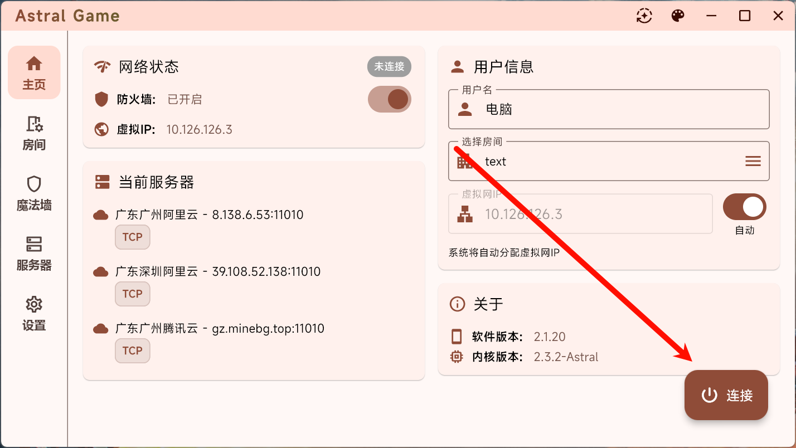
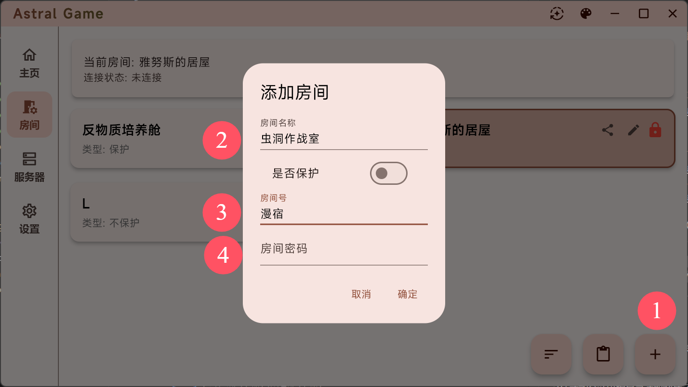

从 v2.6 到今天——Astral 联机工具三年迭代里藏着的产品哲学
一款主打游戏联机的虚拟局域网工具，版本号从 2.6 爬到 2.9 用了整整三年。这篇聊聊它在迭代节奏里暴露出来的坚持与妥协。
现在这版 Astral 是什么样
我打开 Astral 的频率大概是每月两三次——这款主打游戏联机的虚拟局域网工具，它的官网上主打"零配置"。和朋友凑一局泰拉瑞亚或者幻兽帕鲁。最新这版的界面很干净：左侧是服务器列表，中间是房间，右上角一个连接状态指示灯。连上之后，它在系统里偷偷挂一张虚拟网卡，给所有设备分配同一个网段的 IP，然后游戏就会以为大家在同一个局域网里。
用下来最直观的感受是：它变轻了。刚从 2.6 跳过来的时候启动要等好几秒，现在基本一点就开。房间列表原来偶尔刷不出来，现在下拉一下秒更。这些不是什么惊天动地的大功能，但对一个每周可能只开一两次的工具来说，响应速度就是体验本身。

不过也有让人挠头的地方。保护房（加密房间）的逻辑至今没改——房主勾上保护之后，非受邀成员怎么搜都搜不到，只能靠分享码加。这个设计从安全角度讲没错，但朋友换设备重装之后就得重新发邀请，不够友好。去astral文档查过，官方把这个归到"特性"而非"问题"，说明团队在安全和便利之间站得挺明确。
从 2.6 到 2.9：一条慢热的演进路径
版本号跨度不大，但时间拖得够长。我第一次接触 Astral 大概是在 2022 年，那时候用的还是 2.6.x。回看来路，几个关键转折点值得拎出来说。
第一个转折点：2.7 开始内置游戏识别。之前 Astral 是个纯粹的网络层工具，连的只是设备之间的通道。2.7 之后，它开始在界面里直接列出"支持的游戏"，自动识别哪些端口需要放行。这个变化看起来像是产品定位的转折——从"给你一条网络通道"变成"帮你把这个游戏联起来"。
2.8 是一个扎实的维护版本。版本号没跳太大，但社区反馈里提到的几个顽固 bug 都修了：防火墙冲突检测、TCP/UDP 双协议支持的默认开启、房间列表手动刷新按钮。也是在这个版本里，Flutter 界面做了整版重构，界面质感提升明显。

2.9 把 P2P 穿透从"尽力而为"改成了"优先直连"。这是最近的大动作。之前的逻辑是：先尝试 P2P，穿透失败就强制走中转服务器。现在反过来，优先 P2P 直连，只有在双方都藏在严格 NAT 后面时才回退到中转。对游戏延迟影响很大——直连的延迟比中转少几十毫秒，射击类游戏里这几十毫秒能决定先手后手。
样本文档里提到的版本差异提示（"如果双方 Astral 版本差很大，比如一个是 v2.9.x，另一个还是 v2.6.x，可能存在兼容性问题"），其实也侧面说明一个事实：大版本之间协议层确实变过。从 2.6 到 2.9 不是平滑升级，中间有过协议调整。团队能在文档里主动提醒版本差异风险，也算坦诚。
迭代节奏里的产品优先级
三年三个大版本，对一款工具来说，这个节奏算慢的。但慢有慢的规律。
一直在死磕的事：连接稳定性。防火墙拦截、服务器选择、P2P 穿透——文档的故障排查章节里，这三类问题占了八成。团队显然把"连上"排在所有事情前面。用户的心智模型很简单：我打开 Astral，连上，然后玩游戏。中间任何一步出问题都是致命的。所以 2.7 修防火墙检测、2.8 修 TCP/UDP 双协议、2.9 改 P2P 优先级，这些都是同一个方向的持续投入。
一直没动的事：跨平台覆盖。Astral 有 Windows 客户端，从官方下载页面能拿到 exe 和 zip 便携版，但我一直没等到 macOS 原生版本。文档里提到的支持平台主要还是 Windows 和安卓。对一款主打游戏联机的工具来说，这合理——macOS 上 Steam 游戏生态本身就小，但也意味着团队在做取舍：先把 Windows 体验做透，再谈其他。
界面重构是每个大版本的标配。Flutter 的好处是多端一套代码，但代价是每次改 UI 都要整版重画。2.7、2.8、2.9 的界面变化肉眼可见，从早期的粗糙暗色主题到现在的清爽卡片式布局，每两年换一次皮。这说明团队对界面的审美在变，但底层数据模型稳得很——重构不碰协议层，风险可控。
迭代时间轴（基于社区反馈整理）：
2022 Q2 v2.6.x 最初版本，仅提供网络层通道
2022 Q4 v2.7.x 新增游戏识别，定位转向游戏联机工具
2023 Q3 v2.8.x Flutter 界面重构，修防火墙/TCP-UDP 等顽固 bug
2024 Q4 v2.9.x P2P 优先直连策略，延迟显著降低我对下一版的猜测
按这个迭代规律推，下一个大版本（不管是 2.10 还是 3.0）大概率会碰两件事里的至少一件：
要么是跨平台补齐——macOS 客户端呼声一直有，既然 Flutter 是跨端框架，技术上没障碍。团队在 Windows 端打磨了三四年，现在应该有余力扩平台了。
要么是房间体验升级——保护房的邀请机制、房间过期自动清理、房主离开后的权限交接，这些都是社区反复提但一直没动的痛点。如果团队把 2.9 的 P2P 策略稳住了，下一步很可能回头收拾产品体验层。
当然这只是从迭代规律推的，不当官方口径传。万一团队决定直接重构协议层搞 3.0 也说不定——毕竟 2.6 到 2.9 已经跨了好几个协议小版本了。
写在最后
Astral 的迭代逻辑给我一个挺深的印象：它不急着加新功能，而是把有限的开发资源砸在"连上"这件事上反复打磨。P2P 穿透调了三版、防火墙冲突检测修了三版、房间列表刷新加了手动刷新按钮又做了自动刷新。对用户来说，这些变化不会变成发布会 PPT 上的大标题，但每次打开软件，你都能感觉到它比上一版更稳了一点。
这种产品哲学在今天的工具市场里不算多见——多数产品忙着做社交、做云同步、做会员体系，而 Astral 三年就盯着一条链路：让两个藏在 NAT 后面的设备，能用最低延迟互通。
也许这正是工具软件该有的样子：先把核心功能做到没有用户抱怨，再想别的。顺带提一下，Astral 的中文文档和软件备份我在三个仓库都同步了——GitHub放了主要版本，Gitee和GitCode上也各有一份方便国内用户访问。